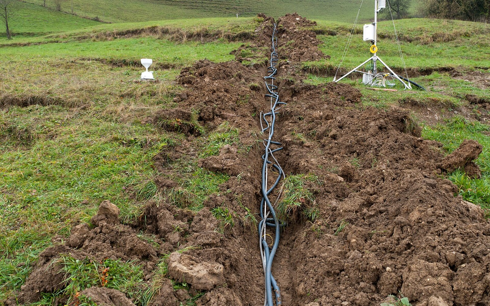

Tomografía de Resistividad Eléctrica (TRE)
Se clavan decenas de electrodos a lo largo de una línea y el equipo realiza cientos de mediciones automáticas. El resultado es una imagen 2D (o 3D) del subsuelo en colores según su resistividad.
- Alcance típico
- 1 m – 150 m
- Trabajo de campo
- 1 a 3 días, según el número y largo de las líneas
- Recibes
- Sección 2D de resistividad interpretada
- Espacio necesario
- Una línea recta y despejada de unas 5 veces la profundidad buscada (para ~30 m, unos 150 m de tendido).
Para qué sirve
- Cavidades y fracturas
- Nivel freático
- Espesor de rellenos
- Contacto suelo-roca
Se recomienda para: ubicar un pozo de agua, diseñar una cimentación, detectar cavidades, grietas o rellenos, profundidad de roca o excavabilidad, presas, bordos y azolve, contaminación o lixiviados.
Cuándo conviene otro método
- La resolución disminuye con la profundidad: los objetos pequeños y profundos pueden no verse.
- Necesita buen contacto eléctrico; en pavimento, roca seca o grava se perfora o se humedece el punto de cada electrodo.
- Líneas eléctricas, tuberías metálicas y cercas cercanas generan ruido.
- Es un método indirecto: la interpretación mejora mucho si se calibra con un sondeo o un pozo.
¿Hasta dónde llega frente a los demás métodos?
TRE está marcado en naranja. Mueve la profundidad para ver qué otros estudios llegan a ella; toca cualquier barra para abrir su ficha.
Alcance típico de TRE: 1 m – 150 m.
Alcances típicos en condiciones normales; el alcance real depende del terreno, del espacio disponible y del equipo. Escala logarítmica.
Otros estudios geoeléctricos
Inyectan corriente eléctrica al terreno y miden cómo responde. La resistividad cambia con el agua, las arcillas, los rellenos, las cavidades y la roca, por lo que permite ver capas y anomalías a decenas de metros.
¿Este es el estudio que buscas?
Cuéntanos la ubicación, el objetivo y la profundidad que te interesa. Te confirmamos si TRE es la mejor opción y te enviamos la cotización.